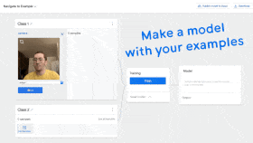
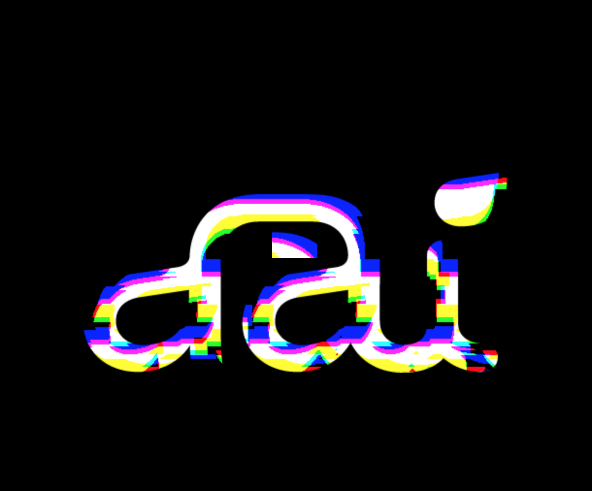

Machine Learning Workshop by AndreasRef
ml5js
Templates, examples and exercises
0) p5js online editor
1) Teachable Machine
- 
Teachable Machine basic templates:
- Exercise 1 (individual): Train the Image Model of Teachable Machine using your webcam. Export the model and copy the URL to the trained model into the sketch to update the
modelURL. See this tutorial for more info on exporting.
If you finish early check out this article for tips and tricks on how to train a more robust model with Teachable Machine.
Teachable Machine + outputs
- Exercise 2 (individual): Use an Image Model trained with Teachable Machine and add interactivity to it, so something happens based when you interact with the webcam and the classifications change.
Remember to change
modelURL in order to use your your own model.
See p5js.org/examples or p5js.org/reference for more on how add interactivity to your sketch using p5js functions, but please go for quick proof of concepts rather than complex stuff (this is not a coding workshop 🤖).
Misc
- Load a Teachable Machine model locally offline (not from cloud URL) Download zip here
2) ML5 MobileNet pretrained classification

3) ML5 regression with webcam


- Exercise 3 (individual): Train the regressor and use the continuous output value slider.value() to control something. It is okay to leave the code as it is, and just focus on training the system
4) ML5 PoseNet pose detection

5) Beyond ML5: Speech and face

6) DAI logo manipulations
- 
7) RunwayML

- Exercise 7:
Get a feel for the different models in Runway by experimenting with them. Have patience when running models remotely, it often takes a few minutes to get them started. Recommended models to experiment with are im2txt, GPT-2, SPADE-Landscapes, PhotoSketch, YOLACT & Adaptive-Style-Transfer.
8) Start prototyping!
- Exercise 8 (group):
Get into groups, do a quick brainstorm, pick a concept and build a fast prototype that shows a key interaction of your idea. You can make something creative, useful and/or silly - up to you - just make sure it has a machine learning component somewhere!
Since time is short, it is recommended to build something on top of a previous exercise and focus on a simple interaction.
Often a good idea can be made into a lo-fi interactive prototype with 5-10 minutes of training, designing a few static images + changing a few lines in the code.
If you plan to train a classifier with Teachable Machine stick to a few (2-4) classes as a proof of concept rather than trying to make something work for a lot of different classes.
How much coding you do is up to you, if you don't feel comfortable, you can choose to focus on concept, designing a fun output or collecting data and training a more robust model.
Informal mini-presentations start at 16:30.
Having issues running the examples in the browser?
- Make sure you are running them in Google Chrome
- Webcam access on Windows 10: Select Start > Settings > Privacy > Camera. Set "Let apps use my camera" to "On". Make sure Chrome has access to use the camera.
- Older computers with less powerful graphics cards might run out of memory if you record hundreds or thousands of examples from the webcam, especially on Windows. If it happens, switch to another computer or be more modest when recording training data.
Other links
Contact Andreas Refsgaard
Website / Email / Facebook / Twitter / Instagram / GitHub / Vimeo